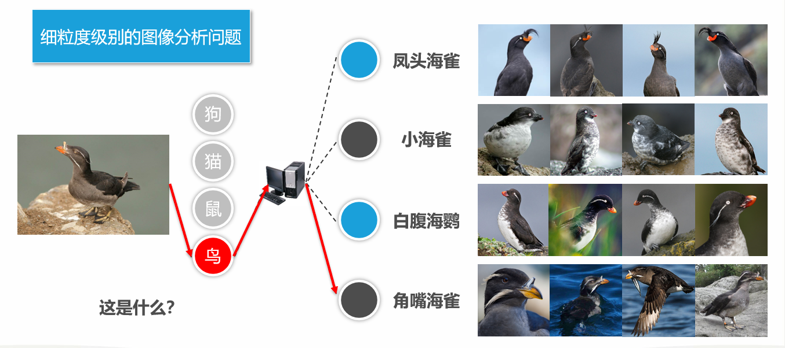
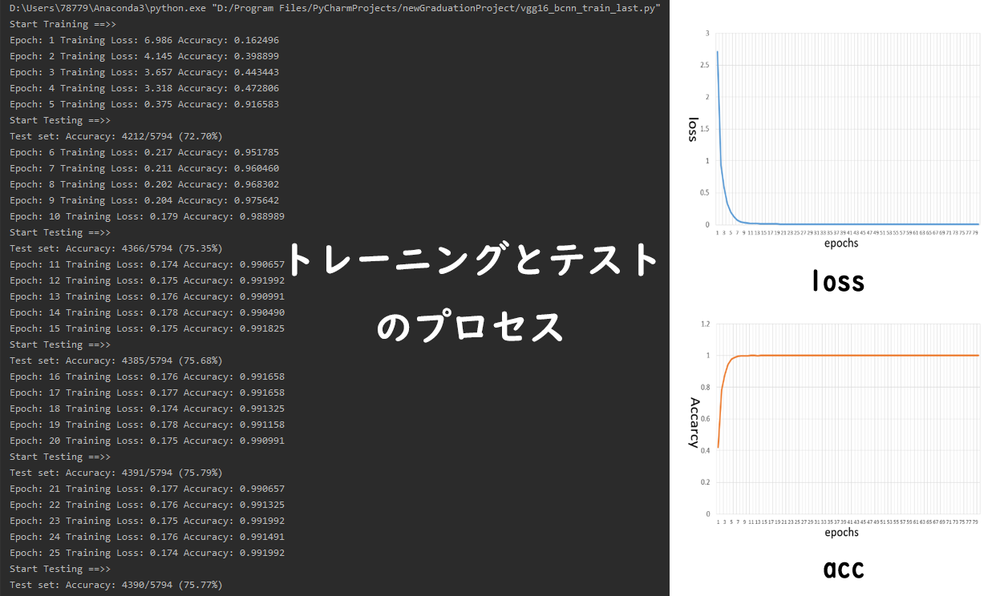

このプロジェクトは畳み込みニューラルネットワークを使用して与えられた画像の特徴を抽出し、その画像はどの与えられたクラスに所属することを実現するためのものである。
このプロジェクトは私の大学卒業研究のテーマである。 2020 年深圳大学コンピュータとソフトウェア学院の2020年度優秀卒業論文選考で、最終的に極めて優秀（S）ではないか、優秀（A）と評定された。
1.目的
この研究の目的は、ある特定の対象領域におけるより詳細な画像識別となる。例えば、ある「鳥」の画像に対して、従来の画像識別では「鳥」だけの結果が出る。詳細画像識別の場合はこの画像に映る鳥の特徴に基づいて、鳥を「アホウドリ」、「ツノメドリ」もしくは「カモメ」のような細分することができる。また、「自動車」の写真が出る場合、自動車のロゴ、ヘッドライト、ボディなどの特徴で自動車のブランドだけ認識することの代わり、「BMW X1」、「Audi A4L」、および「Benz GLB」の特定のモデルを分析できる。

一般画像識別と比べ、詳細画像識別の対象は視覚的に非常に類似したカテゴリであるので、一般画像識別より更に困難になる。ただし、この難点を解決できればその難しさに応じるメリットが得られる。例えば、「鳥」や「花」などの生物的な対象を正確に識別することができれば、専門家の力を頼らなくでも生物分類学問題を迅速かつ正確に解決することができる。「自動車」に対する詳細画像識別は、車両の検出や認識の効果を向上させ、類似な車両を識別する時の誤判定率を減らす、正確な追跡を実現できる。これは高速道路で使われるオートパイロットシステムに役たつになれると考える。我々の生活において、詳細画像識別のメリットはこれらに限らない。そのため、近年詳細画像識別の研究に参加する学者数は益々増えている、において非常に人気があり、重要な研究テーマの一つである。
2.方法
本人が提案したモデルはLinさんのモデルを基づいて改進したものである。その名は、単ーパスバイリニアプーリング畳み込みニューラルネットワーク（Single Path Bilinear Pooling-Convolutional Neural Networks,SPBP-CNN）となる。
このモデルの仕組みは以下のようになる。まず、一つの畳み込みニューラルネットワークを使用して画像の特徴を一回抽出する、この手順で得られた特徴ベクトルをコピーして二つの特徴ベクトルに対して外積演算をとること、いわゆるバイリニアプーリング（HBP,Homogeneous Bilinear) である。これらの手順よりネットワークスペースを大幅に節約とパラメーターの数を減らすことができるというメリットがある。次に取得したバイリニア特徴が合計プーリングによって融合し、モデルとパラメータを特定の方法で最適化する。最後、Softmax レイヤーでモデルまたはテスト結果をトレーニングすることができるようになる。

これは SPBP-CNN モデルのネットワーク構造図となる。有名な VGG-16畳み込みニューラルネットワークを模倣したものである。
ネットワークを構築するためのソースコードは以下の通りになる。
最初、448×448×3 スケールの画像を畳み込みおよびプーリング操作にかけ、28×28×512 スケールの特徴ベクトルを取得できる。
次に、得られた特徴ベクトルをコピーする、pytorch の transpose 関数より次元を交換で二つの特徴ベクトルを得られる。これらの特徴行列に対して外積演算（bmm 関数）を実行してバイリニ特徴ベクトルを取得することができる。そして、ルート演算と正則化でモデルを最適化手順より、最終的に1×1×784 のスケールの融合特徴ベクトルが取得できる。あとは softmax 分類層に入れ、トレーニングまたはテストの手順が完了になる。
3.結果
上記のモデルとソースコードの有効性を確認するため、公開される二つのデータセットでテストを行うことになった。鳥のデータセット（CUB-200-2011）と飛行機のデータセット（FGVC-Aircraft）となる。
CUB-200-2011(鳥) は、トレーニング画像 5994 枚とテスト画像 5794 枚を含む、合計 200 種類の鳥が含まれている。そして FGVC-Aircraft(飛行機) のデータセットには、トレーニング画像 6667 枚とテスト画像 3333 枚を含む、合計 200 種類の鳥が含まれている。
テスト基準：正しい予測の数 / テストサンプルの総数 × 100%。

最後、CUB-200-2011(鳥) の正確率は84.38％、FGVC-Aircraft(飛行機)の正確率は84.13%となった。
更に、今回のメソッドはバイリニアプーリングをめぐって行うので、ここでバイリニアプーリングの有効性も検証することになる。
この検証はアブレーション実験で行い。バイリニアプーリングを最大プーリングと平均プーリングにそれぞれ置き換え、同じ実験環境と同じデータセットでテストする結果はここで示す。
結果は、特徴を線形的に融合する場合で最大プーリングおよび平均プーリングと比較して、バイリニアプーリングの非線形融合方法は、特徴の表現能力を効果的に高め、それによって分類効果を最適化できることを示しています。
4.追記
この項目より、ディープラーニングについての基本的な理解が得られた。私は今、このような興味を持つ分野を大学院生として、研究を続けていきたいと思っている。もちろん、学部生として作ったものはまだ欠点が多数あるけど、これを新出発点として、ディープラーニングの勉強を一生懸命學んでいきたいと思っている。